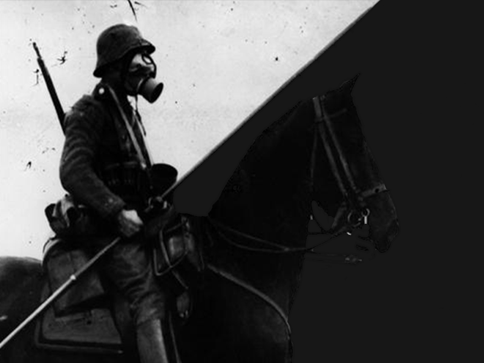

Politicul
Это игра от компаний FortyTwoGames и Politicul studios
Немного о игре:
Politicul - Ролевая игра, с элементами ммо и выживания. Действия происходят в 1922 году альтернативной реальности. 1 мировая война затянулась. Страны не выдержали этого и в них началась анархия. Те, кто мог бежать-бежал. По геймплею вы будете начинать за одного из выживших. Ты можешь основать собственное государство вместе с другими игроками, или вступаешь уже в чье-то. В игре нету никаких нпс и рельсов. Перед игроками открытый мир полный возможностей и интересных ситуаций.
Скриншоты игры:
